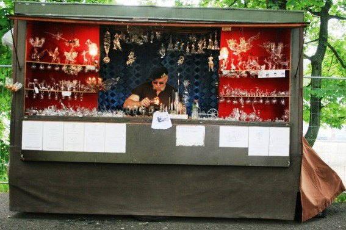

Prodejní stánek — pojízdná sklárna
Prakticky od počátku mého podnikání, od roku 1988, jsem své výrobky prodával na různých tržištích. Od roku 1992 jsem pak prodej rozšířil i o předvádění výroby.



Nejprve v plátěném stánku, ale kvůli problémům s větrem a některými návštěvníky se stabilita plátěného stánku jevila jako nedostatečná. Proto jsem si navrhl a sestrojil dílnu jako přívěs za auto. Pro profesionální práci je potřeba i profesionálního zázemí stabilního a dobře vybaveného stánku.
Pro provoz sklářského pracoviště a zpracování skloviny SIMAX je zapotřebí kromě propan-butanu i kyslík a v některých situacích i stlačený vzduch. Dále, vzhledem k prašnosti prostředí na trhu, je pro mě nezbytné si z rukou smývat prach, aby mi sklo v rukou „neklouzalo“.
Celá konstrukce je podřízena požadavku, aby byla přijatelná i pro historické řemeslné trhy u nás i v zahraničí a zároveň umožňovala předvádět zpracování skla foukáním nad kahanem. Dalšími požadavky pak je dobrá stabilita ve větru, pracoviště v závětří a ochrana před deštěm. V neposlední řadě pak možnost ve stánku přebývat při vícedenních akcích.
Součástí mého předvádění práce sklofoukače je pak možnost sklářské dílny pro děti a dospělé. Ukážu jim, jak si mohou zkusit nafouknout skleněnou kuličku, a tu si pak odnesou s sebou domů.